生成时间：2026-11-16T17:29:34+08:00
今日保留论文数：14
内容构成：今日新文 14 篇；补充推荐 0 篇；经典旧文精读 0 篇
阅读分层：重点精读 2 篇；相关简报 12 篇。精读依据科学贡献筛选，简报保留方法、结论及局限。
数据源警告
- 本次有 2 个数据源访问异常；完整错误已保留在运行日志中，日报只显示摘要。
- 其他来源：2 个异常。
- 主要错误类型：其他 2 次。
高能天体物理重点
1. Discovery of a Short-Duration Fast X-ray Transient Associated with a Short Gamma-Ray Burst
- 来源：arXiv / astro-ph.HE
- 链接：https://arxiv.org/abs/2611.18210
- 作者：Yi-Han Iris Yin, Run-Duo Liang, Hui Sun, Jun Yang, Haiwu Pan, Yong-Feng Huang, Jirong Mao, Bin-Bin Zhang
- 公告 / 来源日期：2026-11-16
- 阅读层级：重点精读
- 评分：novelty 8/10，importance 8/10，relevance 9/10，final 9.35/10
- 推荐理由：EP约8秒X射线暂现与短GRB关联及跨能段谱折点，扩展短时标并合候选样本；需核关联和红移假设。
中文题目：EP260411a：在短伽马暴触发时刻找到秒级软X射线对应体
做了什么：爱因斯坦探针宽视场X射线望远镜（EP-WXT）主要通过积累光子形成图像发现暂现源，但只有几秒的事件容易在长时间积分中被背景淹没。作者以已经探测到的短伽马射线暴为时间标记，回查166个事件；在定位较宽的133个事件中，只有6个满足触发前后20秒连续覆盖条件。EP260411a是经图像与单帧光变检查后保留的唯一候选：源区10个光子、背景环8个光子，局部源探测显著性5.26，软X射线和伽马射线的90%计数持续时间分别为6.1秒和1.3秒。
低能脉冲更宽且峰值更晚，联合能谱偏好约7 keV处的低能折点，形成时间、能谱和源族位置相互支持的关联证据。结论应表述为短伽马暴的可信软X射线对应体候选与并合解释：没有唯一宿主、实测红移、引力波或千新星佐证。六次搜索校正后的偶合概率上限为1.62%，它不是5.26σ源探测显著性的另一种写法。
为什么重要：已知可能来自致密星并合的快速X射线暂现源，多数有持续数分钟的软辐射，容易让人把长寿命中心引擎视为此类事件的普遍特征。本文把可观测参数空间延伸到数秒、较硬的软X射线事件，说明同一短伽马暴脉冲向低能延伸本身就可能形成暂现源。改变的是观测覆盖和分类线索，尚未建立新的无歧义前身星诊断，更没有测出并合残骸一定为黑洞。
理论 / 观测 / 仪器方法价值：可复用方法是由外部触发限定短时间窗，在大定位区与望远镜视场交集中进行低计数成像，再以独立背景时间窗标定候选率。时间窗缩短减少背景，却必须把覆盖条件、单帧宇宙线排除以及六次搜索的试验数纳入统计解释。随后用同一经验脉冲模型连接软硬能段，避免仅凭两个触发时刻接近就宣布共同物理起源。
为什么应该关注：对高能暂现源和后续IACT观测规划，本文的价值是提醒快速软X射线候选可能属于短暴即时辐射，不能把X射线较长的脉冲直接当成较长的中心引擎活动。论文没有探测甚高能辐射，也不能从软X射线折点直接预测LACT光子数。未来需要更快定位、红移和多波段连续观测，才能把触发策略转化为可验证的喷流及并合残骸约束。
展开详细解读：文章讲解、背景、理论、重点章节、图表与相关工作
文章详细讲解
科学问题是，过去偏向分钟级的并合型快速X射线暂现源样本，究竟反映源本身的物理时间尺度，还是反映软X射线仪器对短弱事件不敏感。WXT有效面积有限，几秒内光子很少；如果用数百秒图像寻找这种源，其信号不会随积分时间增长，而背景会增加。因此未被星上触发的事件仍可能存在于档案中。
作者先从166个短GRB建立母样本，分别处理33个精确定位和133个宽定位事件。后者在较长时间窗成像没有获得可靠新候选，因而采用触发前后20秒的连续覆盖条件，只留下6个可检索事件。对每个相机图像寻找未编目的点源，并剔除单帧异常尖峰。这套选择确定了发现的适用母样本，不能用一个发现除以166估计总体发生率。
EP260411a同时表现出成像点源和与GRB相近的单脉冲结构。软X射线脉冲更宽、峰值更晚，能谱相对于GBM模型的低能外推更硬且通量更低。联合拟合可用固定银河吸收加本征谱折点解释，也可用较强吸收加较简单谱形解释。前者BIC更低，但有限X射线光子使二者之间的物理判别仍不充分。
分类上，该事件沿假设红移变化的轨迹落在并合型GRB经验关系附近，又在X射线光子指数与持续时间平面处于较短较硬区域。这支持正轴喷流的并合解释，却不能替代宿主、千新星或引力波的直接证据。作者提出四类X射线暂现源的定性图景；短长界限没有定量定义，单脉冲宽度也不能直接测量残骸寿命。
关键结果是怎么做出来的
第一步是建立选择函数。166个短暴来自2024年1月9日至2026年6月1日的报告和GBM目录。精确定位事件已有长X射线对应体；宽定位样本中，要求整段20秒持续覆盖，避免把曝光间断造成的结构当成脉冲。六个事件是本次短窗搜索的有效试验集合，不能忽略这个筛选再讨论偶然发现概率。
第二步是验证源本身。源区半径67像素，背景环内外半径为134和268像素，源区与背景环面积不同，所以不能把10减8当作净信号。图像位置落在GBM的82%可信区内；它有结构化光变而非单帧尖峰。Li–Ma统计给出的5.26衡量该位置的成像超额，尚未包括时空关联的完整试验结构。
第三步独立估计偶合率。作者在1000个不重叠20秒档案时间窗重复同样筛选，没有发现更强的类似候选。零事件只允许给出率上限；假设恒定泊松率得到95%上限约每秒1.5×10^-4。20秒时间偶合上限再乘空间面积比0.91，得到单次2.73×10^-3，六次校正为1.62×10^-2。空间条件贡献很小，主要约束来自时间稀有性。
第四步检验共同脉冲。软X射线采用2秒分箱，GBM采用0.4秒分箱进行经验脉冲拟合。低能脉冲的宽度随能量约按-0.24次幂变化，峰时约按-0.56次幂变化。峰时统一加了0.3秒以避免负值，因此其幂律不是与时间零点无关的基本物理常数。拟合参数高斯抽样得到的不确定度，还不等同于低计数条件下完整的事件级似然验证。
第五步加入宽带能谱与源族比较。联合折点模型得到7 keV左右的折点和386 keV左右的峰能，均有较大误差。表B1中GBM单独的PL模型BIC反而比CPL低，不能说高能端独立确证截止。Amati图使用0.1到5的假设红移；光学未检出给出的约0.02距离下限依赖GW170817余辉参数和正轴几何。证据链支持关联与并合解释，但每一步都保留相应条件。
展开背景、理论、公式、模型和章节导读
背景知识
快速X射线暂现源是按观测行为命名的集合：它们突然出现并在短时间衰减，但可能来自恒星坍缩、致密星并合、喷流或其他过程。观测时间尺度并非唯一物理分类。论文沿用GRB中的Type I与Type II术语，分别指并合和大质量恒星坍缩，不应与仅按两秒分界的短长暴机械对应。
软X射线成像与伽马暴监测的优势互补。GBM能快速识别高能短脉冲，却常有很宽的位置区域；WXT可在视场内提供更精确位置，却可能只积累少量软光子。已知高能触发时间可以压缩背景积分，但也意味着搜索是有条件的，后续显著性必须针对这个搜索过程定义。
致密星并合后，吸积供能的相对论喷流可以形成短促硬辐射；若留下长寿命中子星，还可能有较长的磁化风或引擎活动。视角、喷流结构以及辐射粒子的演化也会改变持续时间。因此发现短X射线脉冲与并合解释相容，但其长度不能单独识别立即形成黑洞或短寿命超大质量中子星。
软硬脉冲不同步并不罕见。低能辐射可能随冷却或谱演化更晚出现，曲率效应也会改变脉冲形状。本文使用经验时间关系检验连续性，并未对具体同步辐射或几何模型完成唯一识别。读者应把共同起源证据与微观辐射机制的鉴别分开，避免用熟悉的标准机制填补论文没有拟合的环节。
基础理论 / 方法脉络
低计数测量首先是计数问题。源区包含背景和可能的源光子，背景环提供背景率估计；面积和曝光归一化把两个区域连接起来。局部源显著性回答背景能否解释成像超额，而时空偶合概率回答一个无关暂现源是否会恰好出现在GRB附近。这两个零假设不同，不能把显著性数值互换。
外部触发搜索的统计结构可以拆成时间稀有性、空间重合与试验数。本文用真实档案空窗标定候选率，优点是纳入部分非理想背景与人工筛选；代价是必须假设这些空窗代表触发窗。空间均匀分布和时间恒定泊松率都是计算条件，而不是数据已经证明的自然规律。
经验FRED模型描述快升慢降脉冲，它把起始时间、上升和衰减尺度分开。对数强度求极值即可得到峰时，两个降至峰值1/e的位置定义脉冲宽度。跨能段的同类拟合便于比较，但它不负责区分冷却、喷流曲率或中心引擎的贡献，也不能由脉冲宽度直接推出发射区尺寸。
能谱分析必须把物理光子谱通过仪器响应映射到计数空间。低能吸收和本征折点都可以减少软光子，形成退化；固定银河吸收是在减少自由度，不等于测出宿主吸收为零。经验源族关系进一步需要距离修正，红移未知时只能画出假设轨迹，不能把曲线上的任一点当作测得的各向同性能量。
公式与推导
下面把附录A、正文脉冲模型与标准谱分析定义连成一条推导链；标为教学补充的关系只解释统计口径，不声称作者另做了计算。先令无关候选率为r，单位每秒，档案曝光T=20000秒。泊松零计数概率为
零次发现并不意味着r=0。在95%单侧上限处令该概率为0.05，得到
它约束的是采用相同筛选标准的候选发生率，不是所有X射线源的宇宙发生率。将其放入一个20秒搜索窗，至少一次偶然候选的概率上限为
这里指数无量纲；小概率近似为率乘时间。空间上采用均匀候选分布，面积比为
这一比值接近1，说明位置一致性并未带来很强的额外排假能力。六次独立或等效独立搜索的至少一次概率为
这是以率上限构造的偶合概率上限，不能再把它当成精确测出的p值。
对正文式1，令x=t-\(t_s>0\)，上升和衰减参数均以秒为单位，
对对数强度求导，令导数为零，得到峰时；再解相对峰值下降1/e的两个时间根得到宽度，
这些是同一脉冲模型的推论。本文用参数高斯抽样传播误差，并在拟合峰时能量关系前统一平移0.3秒，不能把经验指数直接解释为某一种辐射冷却律。
教学补充：光子谱F(E)在第j个能道的预期计数可写成
响应R包含有效面积与能量迁移，吸收截面与柱密度乘积无量纲，b为预期背景计数。减少低能F与增加吸收都可降低软能道计数，这解释了本文两个谱模型的退化。模型比较使用的BIC定义为
其中k是自由参数数目，n为数据数；只宜比较相同数据和似然口径，不能直接比较WXT单独与联合数据的BIC。最后，标准红移修正给出
峰能单位keV，S为相应静止系积分波段经校正的能量注量，d_L用厘米时能量单位为erg。没有红移时，两量共同随假设z变化，得到轨迹而非独立测量点。
模型拟合 / 应用方法
时间分析从WXT净光变和GBM事件数据开始，先用累计计数的5%到95%区间定义T90，再用经验FRED模型描述单脉冲。两种持续时间定义回答不同问题：约8秒是总体事件时长描述，6.1秒是X射线T90，不能混写。不同能段分箱不同，误差估计采用拟合参数的高斯抽样，不应声称已完整处理低计数后验的非高斯尾部。
能谱分别拟合WXT和GBM后才联合处理。WXT固定银河柱密度1.87×10^20每平方厘米，所得光子指数0.60有约0.7量级不确定度；只有10个源区光子，无法独立限定宿主吸收。GBM使用三个NaI探测器与一个BGO探测器，CPL给出约568 keV峰能，但简单PL也能解释数据，BIC更低。
联合拟合的主要竞争是自由吸收CPL与固定银河吸收CSBPL。后者BIC为80.66，前者86.50；低能折点7(-3,+6) keV与峰能386(-178,+288) keV都属于该模型条件结果。自由吸收模型要求约5.25×10^21每平方厘米的柱密度。不能将一个模型固定的参数与另一个模型拟合的参数拼接为同一组物理测量。
作者对WXT使用CSTAT，对GBM使用PGSTAT，并提供表B1和后验角图。统计量除自由度不是稀疏计数情况下独立充分的拟合优度证明，本文也没有给出能唯一排除吸收解释的新数据。可进一步进行的后验预测、不同背景窗检验及响应系统误差测试是后续工作，而非已报告成果。光学未检出的余辉距离约束同样需保留指定模型与正轴视角条件。
重点章节 / 结果段落怎么读
-
II.1先看样本如何从166个缩到6个：这是理解试验数、覆盖偏差及不能估计总体发生率的入口，随后再读成像候选排除标准。
-
II.2与图1一起看源区、背景区和不同能段T90：面积归一化解释为什么10个源光子与8个背景环光子仍可给出显著超额，也帮助分清事件时长和累计计数时长。
-
III.1配合附录A：先理解关联检验的零假设，再从零次空窗候选推出率上限，最后加上空间比和六次搜索。切勿把这里的概率上限与局部成像显著性合并。
-
III.2与附录B、表B1共同阅读：重点比较同一联合数据的两个模型，并检查GBM单独PL/CPL的BIC。最后进入III.3、III.4与IV，理解未知红移和定性分类如何限制物理解释。
关键图表与解读
图1
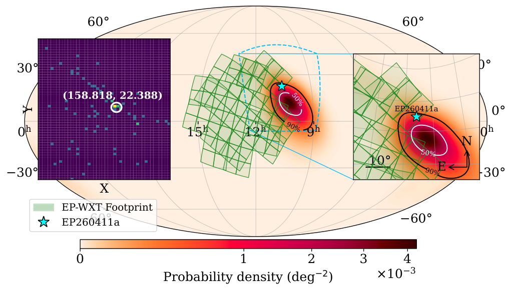
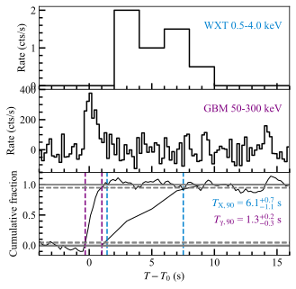
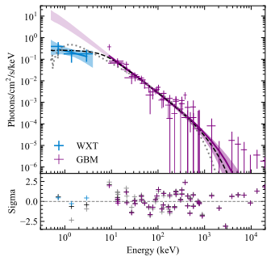
图注：上：EP260411a与GRB 260411A的定位。红色区域为GBM的90%可信区，面积672.06平方度；绿色矩形为触发前200秒至后600秒的WXT覆盖，青色星标为X射线位置，落在GBM的82%可信区内。插图为20秒叠加图，白圈为67像素提取半径。左下：0.5—4 keV与50—300 keV光变，分箱分别为2秒和0.2秒，底部累计光变标示T90。右下：独立及联合拟合光子谱，蓝实线、紫实线、灰点线、黑虚线分别为吸收PL、CPL、吸收CPL、吸收CSBPL；误差为1σ。
怎么看这张图：先看定位覆盖和源区，再比较软硬脉冲及其累计计数区间；X射线更长并不要求引擎工作更久。谱图显示简单高能外推与软端有差异，但折点和额外吸收都可能造成该形状，须结合表B1比较同一数据的模型。 同时呈现点源、时间和能谱三层实际证据。
来源与置信度：arXiv HTML；source verified；https://arxiv.org/html/2611.18210v1/Figure_1_1.png；https://arxiv.org/html/2611.18210v1/Figure_1_2.svg；https://arxiv.org/html/2611.18210v1/Figure_1_3.svg
图2
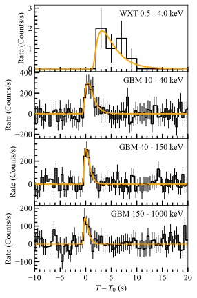
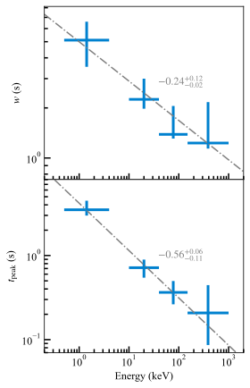
图注：多能段光变及脉冲宽度、峰时随能量的变化。WXT以2秒、GBM以0.4秒分箱；黄色曲线为最佳FRED经验脉冲，灰色点划线为宽度和峰时对能量的幂律拟合。误差线均为1σ。
怎么看这张图：低能脉冲更宽且更晚，形成关联的时间证据。峰时统一平移了0.3秒，幂律指数依赖这一时间定义；经验模型没有唯一识别冷却或几何机制，不宜把该指数直接迁移到其他暴。 直接支撑共同脉冲而非仅触发时间巧合的解释。
来源与置信度：arXiv HTML；source verified；https://arxiv.org/html/2611.18210v1/Figure_2_1.svg；https://arxiv.org/html/2611.18210v1/Figure_2_2.svg
图B1
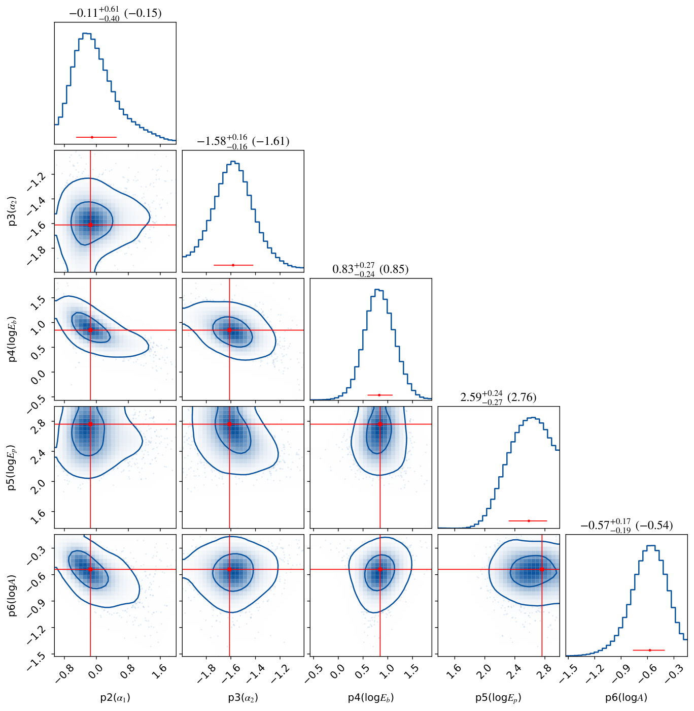
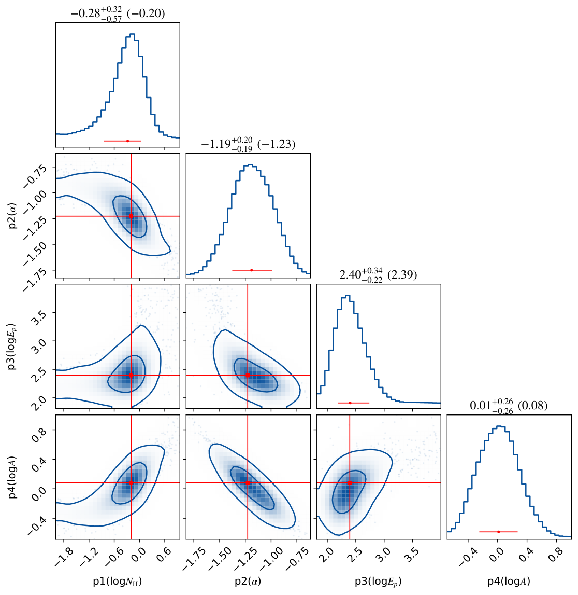
图注：联合能谱的吸收CSBPL与吸收CPL模型参数后验角图。CSBPL固定氢柱密度为1.87×10^20 cm^-2，CPL允许其变化；alpha为光子指数Gamma的负值。红色误差线为1σ。
怎么看这张图：注意两套模型对吸收采用不同约束，不能把固定参数当作观测测量。角图展示模型内部的参数相关性，结合BIC的有限差异理解折点与吸收退化；不能据此宣布唯一辐射机制。 保留解释低能折点所需的拟合条件与退化。
来源与置信度：arXiv HTML；source verified；https://arxiv.org/html/2611.18210v1/Figure_A1_1.png；https://arxiv.org/html/2611.18210v1/Figure_A1_2.png
强相关工作
论文引用Norris等2005年的宽脉冲经验模型（astro-ph/0503383）作为时间拟合工具。本文的推进不是重新推导该模型，而是把同一脉冲表述应用于秒级软X射线与短GRB的联合数据。经验形态连续性有助于关联判断，却不能将原工作对长延迟宽脉冲的物理解释直接移植到这个低计数事件。检索关键词为Norris pulse、energy-dependent width和EP260411a。
源族背景方面，论文讨论LXT230307a及其伴随千新星的GRB 230307A，引用2307.05689与2308.00638。那类事件的并合证据包含独立的后随辐射识别，软X射线也持续更久；EP260411a缺少这些独立验证，新增的是短时硬谱参数区的候选。论文还引用1903.02555讨论GRB即时谱双折点，它提供低能折点的比较背景，但本文并未由此唯一确证同步辐射。上述关系按本篇引用和讨论核对，不宣称本轮重新阅读全文所有前作。
同一事件 / 同类源线索：
相似工作：
基础理论 / 方法工作：
相反观点 / 张力线索：
（未提供）
2. Gravitational-wave hierarchical inference from population samples
- 来源：arXiv / astro-ph.HE
- 链接：https://arxiv.org/abs/2611.17428
- 作者：Federico De Santi, Davide Gerosa, Matthew Mould
- 公告 / 来源日期：2026-11-16
- 阅读层级：重点精读
- 评分：novelty 8/10，importance 8/10，relevance 8/10，final 9.00/10
- 推荐理由：用总体样本直接做层级推断，绕开密度评估且包含选择效应；有GWTC及五形成通道验证，方法贡献显著，需正文确认代理误差。
中文题目：直接用模拟双黑洞样本进行引力波种群推断：方法、验证与有限样本边界
做了什么：双黑洞形成模拟可以生成许多并合系统，却通常无法给出任意质量、自旋与红移处的解析概率密度，因而难以直接进入标准种群似然。作者改写积分方向：从物理种群抽样，在这些样本上计算单事件似然代理和探测概率代理，再合并整个观测目录。高斯混合模型用于描述数据端与探测端，避免每换一套恒星演化模拟就重新拟合种群密度。限定到各事件实际支持的参数区域，可以在允许补充抽样时提高计算效率。
方法先在可解析种群上与标准推断比较，再用于一代、二代黑洞混合，最后比较五种形成通道的36份模拟目录。最后一个示例使用排除GW231123后的258个事件，在既定网格中偏好低出生自旋和较高公共包层效率；但其蒙特卡洛方差超过前一验证环节的门槛。这是可复用推断框架与受限天体物理示范，不是已经排除所有替代形成机制的最终种群测量。
为什么重要：以往常先测质量、自旋分布，再把峰或截断与形成模型作事后比较；直接模拟比较能把参数间的物理关联一并带入推断，例如并合遗迹的质量与自旋不能独立选择。本文把最昂贵且需要校准的数据端代理与具体形成模型分离，使同一批事件产品有机会服务不同模拟。不过避免种群密度估计，并不等于消除事件似然近似、选择效应、模拟覆盖或天体物理假设。
理论 / 观测 / 仪器方法价值：最值得迁移的是把积分写成可抽样模型的期望值，并明确区分统计误差的来源。事件后验必须先除去参数估计先验；探测样本必须结合注入分布和观测时长权重；共享模拟目录计算多个积分时，方差必须保留协方差。对其他只能生成模拟样本的天体种群，这套思路可借鉴，但前提是具有可靠观测似然、探测模拟与足够覆盖，不能把任意模拟云直接当成无偏测量。
为什么应该关注：高能和多信使研究常需要比较形成环境或伴随辐射预测，而真实物理模型未必有简单概率密度。本文提供了把前向模拟与总体数据相连的具体做法，也示范了如何暴露模型不能产生某个事件的事实。下一步应关注稀有系统的定向补充模拟、事件代理尾部验证及异常事件处理，而不能只追踪最佳通道比例；所谓公共包层占比约93%只属于本文选定网格与被截取的事件样本。
展开详细解读：文章讲解、背景、理论、重点章节、图表与相关工作
文章详细讲解
科学问题是如何检验一个只能产生模拟星表的形成模型。单次引力波事件通常给出宽而相关的质量、自旋和距离后验；仪器又更容易看到某些系统。直接数模拟点与观测点的距离会同时忽略测量不确定性和探测选择，无法得到正确的种群权重。需要的对象是每个模型生成整个已探测目录的概率，而非两张直方图看上去是否相像。
作者将每个事件的后验除以其原先验，以高斯混合分布近似一个与事件似然成正比的函数。再从候选种群抽样，在这些点上求该函数平均值。探测端同理，利用已找到的注入事件及其已知生成分布，构建选择概率的可评价代理。这样模型端只需抽样，不必在任意点给出密度；两端的代理却仍需独立训练和验证。
验证使用同一可解析的20维双黑洞种群，比较传统重加权与新抽样路线。多数后验相容，但自旋倾角超参数的尾部有差别，似然方差中位数分别约2.0与2.6。二代并合示例给出约96%一代加一代、3%一代加二代和1%二代加二代的模型内比例；后两者不是直接识别每个事件的客观标签，而是由配对函数、遗迹自旋及红移延迟假设共同推得。
真正昂贵的五通道模拟无法在每次似然调用时补抽样，因此只在已有20个物理网格点比较。它保留了模拟相关性，却也把稀有区域的样本不足完整暴露出来：GW231123在所有目录的事件支持区中均无模拟点，被事后排除。新方法不会创造不存在的信息；更多模拟、完整异常事件建模与更广物理假设，是把方法示范推进到稳健形成通道约束的必要步骤。
关键结果是怎么做出来的
第一步是统一事件坐标和先验。作者采用源参考系主质量、质量比、红移、两个自旋大小与两个倾角余弦七个参数；距离按Planck 2018宇宙学换成红移，探测器参考系质量除以一加红移。转换先验时必须保留雅可比，否则似然代理会把原先验与坐标体积误当成种群偏好。其余参数被假定服从参数估计与注入共同采用的分布，这是降维成立的条件。
第二步处理有限区间的边界。质量和红移取对数，质量比作logit变换，自旋采用加权经验累积分布再映射到标准正态。自旋常测得很差，后验可一直伸到零或一，直接把边缘挤到长尾会影响种群结果。每个事件使用50个全协方差高斯成分，图1检查的是去先验后的目标与代理是否一致，不是拟合一条天体物理质量分布。
第三步校准探测选择。作者分别处理五套注入资料，以各自的参考分布和运行权重训练已探测样本分布，再转换为选择积分。成分数由BIC选为8、14、6、4和20。图2将代理与传统注入重加权直接比较；当红移可与其余参数分离且密度可计算时，额外用偏向低红移的参考抽样改善有效样本数。真实形成模拟通常有质量、红移关联，所以最后的五通道分析没有采用这一混合技巧。
第四步只在事件重要区域投入昂贵评价。区域同时约束主质量、质量比、啁啾质量和红移的各一维99.9%区间，图3显示啁啾质量条件如何贴近相关后验。区域内抽样后还须乘回种群落入该区域的概率，不能把每个事件附近的人为放大当作高似然。截掉的尾部会累积成对数似然偏移，单事件边缘区间很宽也不自动保证整个目录的偏差可忽略。
第五步先验证再应用。解析模型施加对数似然方差小于4的截断，图4大体相容而自旋尾部并非完全重合，图5展示事件项和选择项各自的噪声。五通道示例却未施加这一截断，各网格方差中位数为5.9—53.7；表2证据旁的约0.1—0.2数值只是Dynesty估计的积分统计误差，不包含这些有限目录影响。最佳与次佳网格的对数证据差9.6，应与这种限制一起读。
最后检查异常事件排除。作者估计，在当前有限目录及其有效样本假设下，排除GW231123区域对选择项的对数似然修正上界约0.06，较网格差异小。然而这是选择归一化的一项估计，不能证明所有模型可以解释该事件。表2实际上评价的是该区域之外的系统，模型无法产生被排除观测这一事实仍然存在。
展开背景、理论、公式、模型和章节导读
背景知识
种群推断研究的是一类天体的分布，而不只是逐个事件最可能的参数。一个双黑洞的质量比与自旋可能相互退化，许多事件合并后才能约束共同规律。层级贝叶斯方法把单事件真实参数当作隐藏变量，把控制整个分布的参数称为超参数；它允许每个事件保留其完整误差形状。
探测到的目录并不是宇宙种群的随机完整抽样。质量、自旋、距离及方向影响信号强度和搜索效率；若一个模型产生很多容易被看到的系统，同样数量的观测在归一化后会得到不同权重。因此选择函数与每个事件的似然一样属于推断本体，而不是最后附上的经验修正。
物理种群合成从恒星初始条件出发，加入质量转移、公共包层、超新星及动力学相遇等过程，输出并合双星。公共包层指伴星进入扩展包层后通过轨道能量帮助抛射气体的阶段，其效率影响最终轨道和后续潮汐增旋。输出存在复杂相关性和稀有通道，若先平滑为密度，可能把稀疏区域抹掉或填出原模拟未支持的尾部。
一代黑洞由恒星形成，二代黑洞是先前并合的遗迹。数值相对论可把前驱质量、自旋映射成遗迹性质，但这个映射一般多对一，不容易反解成密度。于是抽样前驱并计算遗迹很自然，反求任意遗迹参数的概率却很困难。本文选择它作为方法过渡案例；遗迹自旋常聚集在约0.7是特定前驱族的物理结果，不能解释成数据已精准测出普遍截断。
基础理论 / 方法脉络
积分方向可以互换，但目标概率不变。传统方法从事件后验抽点，在每个点评价种群密度并去除事件先验；新方法从种群抽点，评价事件后验与先验之比。前者在事件区域效率高却要求可算种群密度，后者适合模拟器却可能把多数样本浪费在事件似然接近零的区域。后续所有技术都围绕弥补这个效率代价。
高斯混合模型是多个带权多元高斯分布之和，可以表达多峰及参数相关。这里它是数据端数值近似，不是黑洞形成模型。坐标变换使有界变量适合高斯表示，返回物理坐标时的雅可比维持密度归一化。经验累积分布只修整每个边缘，跨参数相关性仍由全协方差混合来描述。
选择代理使用一个关键比例关系：被探测注入的密度正比于注入生成密度乘探测概率。除去已知生成密度、恢复样本计数与观测权重后，即可在新种群点上评价探测贡献。多套运行的注入分布不同，不能简单混起来训练一个未加权密度。参考分布变换后分子分母雅可比抵消，减少了数值计算。
受限抽样的收益取决于是否能生成新样本。若可以在事件区域内重新获得固定数目的点，昂贵似然评价更多落在有效位置，方差下降；若只有固定星表，把区域外点删掉只是少做无用计算，不会增加区域内的信息。并且各事件和选择项共用同一星表时，误差相关，忽略交叉项可能高估或低估总方差。
模型比较同时受模拟物理和数值噪声限制。证据把超参数先验范围内的似然积分，既奖励对数据的解释，也受到先验与有限网格的限定。一个网格点证据最大，只意味着它在被比较的模型集合中相对较好。特别是事后剔除无法解释的事件后，证据不再回答原完整目录是否与该形成模型相容。
公式与推导
以下沿原文式1—6、20、23、25—26、32及47连接推断步骤；省去与种群无关的事件证据常数，并不补充新的实测结论。①设事件数据为d_i、真实参数为θ、种群超参数为λ。由贝叶斯关系定义数据端函数：
其中π_i是该事件参数估计先验，Z_i与λ无关；实际代理可采用去掉Z_i后的比例形式。后验本身不能直接当似然，否则先验会被重复计入。
②单事件对种群的支持是对真实参数积分：
p_pop在所选物理变量及测度下归一化；g_i的绝对单位和常数无须跨λ改变。传统估计从事件后验抽点，形成种群密度除先验的平均；本文改从p_pop抽点，得到同一积分的另一种估计。
③有限种群样本给出
N_i为抽样数，非观测事件数。该式不需要种群密度，但若绝大多数样本远离事件支持区，平均由极少数点支配，必须在后面改善效率并估计误差。
④将选择概率写成同类期望：
ξ为无量纲被探测比例，介于零与一之间。本文用各运行已探测注入的混合代理除参考分布、乘相应权重来估计它；当且仅当红移块可分离且可求密度时，才能采用参考红移抽样的额外重要性权重。
⑤原文采用消去总体率后的目录形状似然：
N_obs是实际纳入的观测数。这里不再单独拟合总并合率；若需要率信息须回到带率的泊松模型。负幂说明选择归一化贯穿整个目录，小的相对选择误差也可能被事件数放大。
⑥为提高抽样效率，定义区域R_i及其种群概率P_i：
区域由事件后验支持设定，而P_i仍取决于候选物理种群。归一化因子不能省略，否则局部抽样被错误地解释成该模型总能产生此类事件。
⑦在区域外贡献可忽略时，积分近似为
P_i可由累积分布计算或通过额外抽样计数。后者也有误差，不能只算区域内平均值的方差。与固定评价次数的全域抽样比较，真正补充区域内样本才有统计增益；固定星表删点不满足这一条件。
⑧令ε_i为漏掉的积分占比，尾部偏差为
最后近似要求各ε_i很小。重要的不是某个一维区间名义上覆盖99.9%，而是这项总和在待比较超参数范围内是否变化得足够小；多事件累积与种群尾部偏好均可能放大影响。
⑨对数似然的一阶误差传播给出
各项均无量纲；该近似在相对积分误差较小时最可信。独立抽样时交叉项消失，共享固定模拟则一般不消失。这一V描述蒙特卡洛数值不确定性，不是天体参数后验宽度或模型证据完整误差。
⑩若形成通道权重为η_c且总和为一，可预计算每个通道的事件与选择贡献：
这解释了昂贵模拟为何可在固定网格点只计算一次，之后拟合通道比例很快；但预计算不会消除原目录的有限样本噪声。推得的是模型内本征比例，不能直接当已观测目录中各通道的计数比例。
模型拟合 / 应用方法
数据输入包括各事件公开参数估计样本与五套注入资料。作者优先使用NRSur7dq4波形样本，否则合并其他可用波形样本；随后进行先验转换、加权EM拟合和物理坐标变换。代理的50成分并非普遍最优常数：作者检查10—300成分对结果影响较小，但发现自旋边界变换十分关键。图1的单事件展示需与整体种群验证结合，不能代表所有事件尾部已被无误重建。
解析种群验证采用Bilby与pocoMC，每个事件区域抽取二十万个种群点，选择函数用一百万点；超参数先验大体沿用目录分析，红移演化指数缩至−5到8以利收敛。方差小于4的截断与标准方法一致，但它本身改变可探索似然空间，不应被描述成无代价稳定化。比较后验时，尤其要查看自旋倾角的尾部和选择项方差，而不是只看多数中位数接近。
二代并合模型有16个超参数，采用一代质量折断幂律、截断高斯自旋、各分支质量比配对函数和延迟后的红移分布。遗迹按准圆并合数值相对论拟合生成，没有按反冲速度逐个计算环境留存；留存影响只吸收到分支比例。红移上限3又漏掉更早形成而后来并合的二代黑洞，作者估计可使两个二代分支分别低估不足约5%和约40%，虽仍在当前统计区间内，也提示这些比例不宜泛化。
五通道示例在出生自旋四个值与公共包层效率五个值构成的20点网格上，用Dynesty和Dirichlet先验拟合比例。最佳点为出生自旋零、公共包层效率5，其本征公共包层比例中位数约0.93；次佳效率2的对数证据低9.6。两者对数似然蒙特卡洛标准差约2.5和2.7，作者也认为该相邻排序不如排斥高出生自旋稳健。不能将表中嵌套积分误差当作包含模拟误差的总证据精度。
主要失败方式是模型或有限目录对某事件没有支持。GW231123被排除后，其余258个事件可产生非零似然，但这项选择发生在看过数据之后。对未覆盖区域做更多模拟、保留波形系统误差和设计显式异常分量，是后续可检验的改进方向；这里并未实施这些方案。既有区域外结果可报告，但应始终随附其样本定义与覆盖边界。
重点章节 / 结果段落怎么读
先读II.1—II.3，抓住两种蒙特卡洛平均对应同一个积分这一事实，并逐项指出谁负责抽样、谁负责评价密度。只有这样才不会把标题中的无需种群密度误解成无需任何概率近似。
接着读III.1—III.3和图1—2，检查事件先验去除、坐标变换、各运行注入权重及红移混合条件。这里解决的是代理是否忠实于既有数据产品，先于任何形成通道结论。
再读III.4及图3，追踪区域概率如何乘回似然，以及式32的尾部偏差。把可重新抽样与固定星表两种情形分开，才能理解为什么真实模拟示例仍有很大的方差。
读IV及图4—5时，同时比较后验尾部和方差分解，不要只看轮廓大体重合。再转到V的遗迹与配对假设，辨认约0.7自旋结构中哪些来自模型、哪些确受观测约束。
最后将VI.2、表2和VI.5连读：先确认258个事件的样本定义，再看最佳网格，最后回到被排除事件的影响。选择函数修正很小与模型能够解释全部观测，是两个不同问题。
关键图表与解读
图3
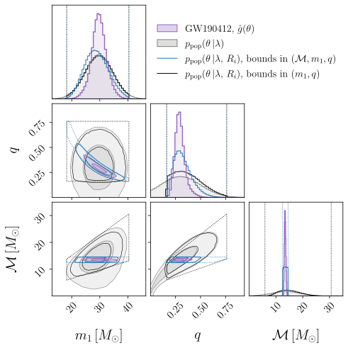
图注：以GW190412及主质量、质量比上的高斯玩具种群示意受限抽样。灰色为直接种群抽样，紫色为事件后验，等高线包含50%和90%可信区；黑色虚线框及实线分布仅限制主质量与质量比，蓝色虚线及实线还同时限制啁啾质量，更贴合相关后验支持。
怎么看这张图：比较有效样本落在紫色区域的比例。蓝色方案的收益来自重新在区域内抽样，并须乘回区域概率；固定星表简单删掉区域外点不会获得同样方差收益。 显示核心抽样方法及其成立条件。
来源与置信度：arXiv HTML；source verified；https://arxiv.org/html/2611.17428v1/restricted_sampling_chirp_mass_GW190412_toy.svg
图5
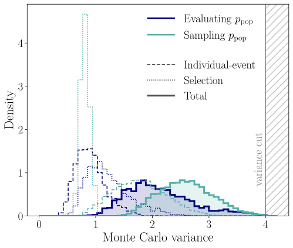
图注：Default BBH模型下传统估计器（蓝）与种群抽样估计器（青）的对数似然方差分布。虚线和点线直方图分别为单事件及选择效应贡献，实线为总方差；右侧斜线区在抽样时设为零似然而排除。
怎么看这张图：新方法的选择项更集中，但事件项使总方差略高；不能只凭后验大体重合宣称所有数值误差消失。方差截断也会改变可探索空间。 直接核验数值误差而非只展示天体物理结论。
来源与置信度：arXiv HTML；source verified；https://arxiv.org/html/2611.17428v1/var_logL_combined_full_pop_new_fits.svg
图10
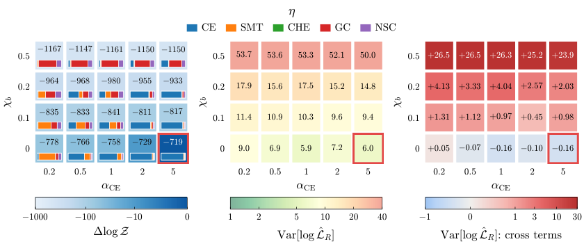
图注：表2的五通道模拟网格比较。左：格内数值为取整的对数证据，底色为相对最佳点的证据差，彩条为重新归一至总和一的本征通道比例中位数。中：对数似然蒙特卡洛方差的后验中位数。右：共享模拟样本引入的事件间及事件—选择项协方差贡献。红框标出出生自旋零、公共包层效率5的最佳网格点。
怎么看这张图：先看左侧相对偏好，再用中右面板判断有限样本与共享误差。该结果排除了GW231123，且所有点的方差均高于前面验证的4门槛，不能把最佳点当作模型无关的形成通道答案。 将主要物理示例与数值限制放在同一图中。
来源与置信度：arXiv HTML；source verified；https://arxiv.org/html/2611.17428v1/zevin_plot_cov.png
强相关工作
统计基础可参照本文参考文献中的Mandel、Farr与Gair（2019，arXiv:1809.02063），它讨论带选择偏差与测量不确定性的总体分布推断。本文沿用这种层级概率结构，新增的是如何让只有样本的物理模型进入积分，以及怎样管理其数值方差；它没有取代选择校正的基本理论。这里的关联依据本文引用与方法对照，未声称重新复现该基础论文。
五通道目录来自Zevin等（2021，arXiv:2011.10057），此前Colloms等（2025，arXiv:2503.03819）使用正规化流插值同类模拟。本文VI.4指出，低出生自旋与较高公共包层效率的倾向总体一致，但目录规模、密度近似及异常事件处理不同。因而不能把更大的证据差单独归功于新算法。Gerosa与Fishbach（2021，arXiv:2105.03439）的二代并合综述则提供遗迹自旋、环境留存及更高代并合背景，帮助识别本文示范模型省略的物理。
同一事件 / 同类源线索：
相似工作：
基础理论 / 方法工作：
相反观点 / 张力线索：
（未提供）
相关简报
1. Soft Excess Variability and a Test of X-ray Reprocessing in AGN Mrk 359 and NGC 4051 using NICER and TESS
- 来源：arXiv / astro-ph.HE
- 链接：https://arxiv.org/abs/2611.17439
- 作者：Tejas Sewak, Michael M. Fausnaugh, Edward M. Cackett, Javier A. García, Keith Horne, Rahul Jayaraman, Viraja C. Khatu, Ethan Partington
- 公告 / 来源日期：2026-11-16
- 阅读层级：相关简报
- 评分：novelty 7/10，importance 8/10，relevance 8/10，final 8.70/10
- 推荐理由：同步NICER/TESS区分软超与光学驱动，约30天的两源样本对简单再处理提出限制，不能等同否定全部再处理。
中文题目：两颗窄线Seyfert 1星系的同步监测检验软X射线超出与光学变化
问题、方法与结论：作者利用约30天NICER与TESS同步观测，对Mrk 359的31个、NGC 4051的51个X射线时段分别拟合，比较主连续谱、软超出及光学光变。两源X射线与光学相关系数约0.6和0.5，软超出与光学约0.5；主连续谱与软超出的相关较强，约0.7和0.9，在当前日级至半日级采样下相容于零时延。结果不支持简单、静态的线性X射线再处理单独主导这些日期的光学变化。
意义与贡献：软超出是低于约2 keV、超过硬X射线外推的额外辐射，温暖冕区散射和电离盘反射都可产生类似谱形。同步分离光谱成分比比较总计数更接近盘冕耦合问题，但相关偏弱不能直接否定反射，也未测得可信的跨波段滞后。
可借鉴之处：作者以一万对互不相关的模拟光变保留真实采样，估计相关阈值；NGC 4051还以替代吸收模型检查光变分解，得到相近趋势。可借鉴的是同时检查采样、功率谱假设和谱分解依赖，而不是只报告相关系数。Mrk 359软超出较弱，黑体只是经验描述，不应读成盘温测量。
局限与关注点：NGC 4051反射拟合固定高自转与电子温度，密度接近模型上界；这些不是独立测量的黑洞性质。有限监测、光学数据空缺与模拟功率谱影响阈值，本文也未用半日采样检验百至千秒反射时延。几何变化、遮蔽、极紫外驱动或盘内涨落均仍可能；需要更长且更密的同步观测分辨。
图6
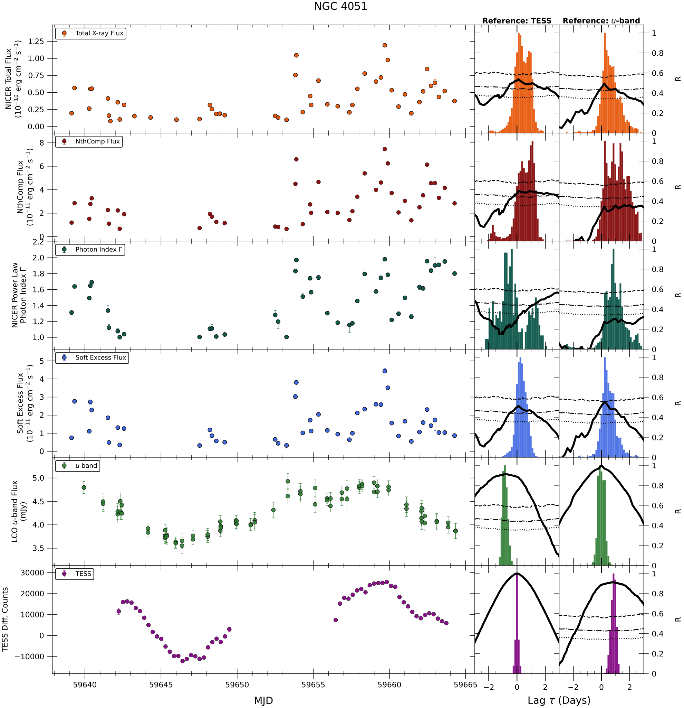
图注：NGC 4051的NICER、TESS与LCO u波段光变及互相关，布局沿用图3。左列给出总X射线、幂律及软超出成分、光子指数和光学光变；MJD 59643—59648的分成分参数未受约束，仅给总通量，TESS以0.28天分箱。第二、第三列分别以TESS和u光变为参考，显示互相关和质心时延分布；90%、95%、99%无相关模拟阈值沿用图3标记。
怎么看这张图：重点看两种光学参考得到的弱相关是否一致；缺测及谱分解影响判断，半日采样不能检验百秒尺度反射时延。 支撑同步盘冕变化与其统计限制。
来源与置信度：arXiv HTML；source verified；https://arxiv.org/html/2611.17439v1/ngc4051_lc.svg
2. WISE-VAULT: Decade-long Mid-Infrared Variability of WISE AGN
- 来源：arXiv / astro-ph.HE
- 链接：https://arxiv.org/abs/2611.17996
- 作者：Suvendu Rakshit
- 公告 / 来源日期：2026-11-16
- 阅读层级：相关简报
- 评分：novelty 7/10，importance 8/10，relevance 8/10，final 8.70/10
- 推荐理由：450万AGN长期红外变源公开目录及极端候选，实用大样本增量，不能将候选当TDE确证。
中文题目：WISE VAULT建立AGN长期中红外变化目录，区分振幅口径与候选纯度
问题、方法与结论：研究从约454万红外颜色选择的活动星系核候选出发，利用2010年AllWISE及2013—2022年NEOWISE数据形成半年分箱光变。质量筛选且至少16个历元后保留1,898,589个对象，其中632,939个通过变化判据；4,897个W1最大最小差超过0.5星等，只有624个本征均方根振幅超过0.5星等，两者不可混称。目录适合筛选长期大幅变化及后随观测目标。
意义与贡献：中红外记录尘埃对吸积活动的响应，也可能混有喷流贡献。大样本将稀有变化对象置于统一测量框架，但颜色选择的母样本可靠度不等于时变分类纯度，大幅变化本身也不确证潮汐瓦解或变脸AGN。
可借鉴之处：作者用非活动星系控制样本重标定历元误差，并以常源模拟检查假阳性。无线电响亮、X射线匹配及总体样本的结构函数显示不同振幅；限定亮度范围后仍保留部分差异。公开光变与目录可用于候选复核，尤其要同时读取最大幅差、本征均方根及误差标定。
局限与关注点：常源模拟约7.5%的假阳性率是特定零假设检验结果，不是入选目录的污染率。多数对象缺红移，整体结构函数在观测者参考系比较；半年采样、异质无线电和X射线匹配、亮度与红移混杂均限制因果解释。折断时间尺度不能直接当尘埃半径，部分子样本也不偏好折断幂律；与质量、光度或爱丁顿比的相关不证明单一驱动因素。
图2
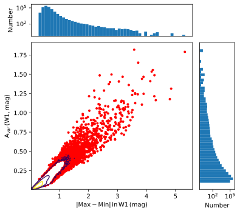
图注：W1本征变化振幅Avar与最大—最小星等差的比较。图示1σ、2σ、3σ密度等高线及高变化离群对象；左上和右下边缘直方图以对数刻度显示对应振幅分布。
怎么看这张图：横纵两种振幅并不相等，稀有极值可产生大幅差但未必有很大的本征均方根；因此两类超过0.5星等的对象数不可混用。密度等高线也不是逐源变化发现显著性。 澄清目录中最易混淆的振幅统计口径。
来源与置信度：arXiv HTML；source verified；https://arxiv.org/html/2611.17996v1/var_delmag.svg
3. A helium-rich mass-donor in a 3.5-hr low mass X-ray binary
- 来源：arXiv / astro-ph.HE
- 链接：https://arxiv.org/abs/2611.18226
- 作者：Duncan K Galloway, Ryosuke Harai, Adelle J. Goodwin
- 公告 / 来源日期：2026-11-16
- 阅读层级：相关简报
- 评分：novelty 7/10，importance 8/10，relevance 8/10，final 8.70/10
- 推荐理由：21次热核暴反推3.5小时双星贫氢供体，挑战轨道周期经验分类；成分推断依赖燃烧模型。
中文题目：3.5小时X射线双星的爆发模型提示异常富氦燃料，但参数仍有张力
问题、方法与结论：研究用IGR J17511−3057在2009年的热核X射线暴反推供体成分：24次观测对应21个独立暴，因最早事件缺持续通量历史，实际模拟20个。beansp把持续辐射估计的吸积历史输入点火模型，联合比较到达时间与注量；分段重启暴发序列减少长间隙和累积误差。基准模型偏好氢质量分数约0.031、CNO约4×10^-4，提示轨道并非超紧致的系统也可能有富氦供体。
意义与贡献：轨道周期长于约80分钟并不能保证吸积物质接近太阳成分。本文提供一个有价值的异常案例，并用剥离后恒星模型讨论残余富氦包层。但成分来自有条件的点火模型拟合，不能等同于供体光谱测量，更不能把提出的共同包层演化路线当作已重建的历史。
可借鉴之处：逐个观测暴重新起算模型序列，可减轻持续通量误差累积；多仪器注量需先校准，Swift在本例乘以约1.323的系数。原图中到达时刻残差约0.85小时且有相关结构，显示只看注量匹配会掩盖模型失配。末次高注量与漏暴计数对推断尤其重要。
局限与关注点：MCMC未达到正式收敛标准，部分后验贴近质量、半径和各向异性先验边界。约8 kpc距离及辐射各向异性与无光球膨胀的峰值通量有张力；恒星模型所需低倾角又与铁线倾角不一致。解析成分检查只使用能量比小于1的尾部，并非独立无条件确认。局部磁通道吸积是待检验解释，论文未模拟它。
图5
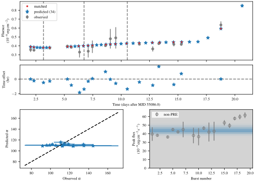
图注：IGR J17511−3057在2009年爆发期间的分段连续暴序列模型pa_mr与观测比较。上：灰点为暴能量通量，无法测得者以灰虚线标示；蓝星为模型集合预测，叠加红色标记者与已观测暴匹配。第四与第五次观测暴及最后一对之间重新起算序列。中：匹配暴时刻残差，均方根0.8535小时。左下：预测与观测alpha值；右下：峰值通量及距离推得的爱丁顿通量分布，灰底表示峰通量未进入似然。
怎么看这张图：先看残差与重启位置，再看未纳入拟合的峰通量是否相容。形式后验很窄不保证模型已能解释每次暴，富氦供体判断仍受吸积几何和序列拟合限制。 展示拟合的实际成功与失败，避免只报组成后验。
来源与置信度：arXiv HTML；source verified；https://arxiv.org/html/2611.18226v1/pa_mr_prod_predictedburstscomparison.svg
4. Magnetic kink instability of jet-wind outflows. I. Static column configuration
- 来源：arXiv / astro-ph.HE
- 链接：https://arxiv.org/abs/2611.18268
- 作者：Krishna Kumar, Serguei S. Komissarov
- 公告 / 来源日期：2026-11-16
- 阅读层级：相关简报
- 评分：novelty 7/10，importance 7/10，relevance 9/10，final 8.70/10
- 推荐理由：高磁化柱与低磁化壳扭结混合可联系喷流重子负载，但静态柱和次级不稳定性识别有限。
中文题目：静态喷流—盘风柱的扭曲不稳定性可促进物质互穿
问题、方法与结论：作者用三维相对论磁流体模拟，把磁化度1000的轻质内柱放在磁化度0.1或0.001的致密外壳中，模拟黑洞喷流与盘风的简化界面。恒定磁螺距构型的电流驱动扭曲模形成螺旋线圈，使外壳物质进入圈间和内部；高分辨率还出现沿局部磁场的指状结构，暂解释为磁Rayleigh–Taylor次级不稳定性。线性增长率接近均匀柱理论，螺距越大增长越慢。
意义与贡献：该研究给喷流重子负载提供一种可检验机制：盘风不只负责准直，也可能通过界面不稳定性向高磁化喷流供给质量。但模拟初态是静态柱，并未直接预测真实AGN的质量通量、终端洛伦兹因子或辐射谱，结果应作为机制可行性证据。
可借鉴之处：同时比较密度界面、速度场和磁化度，能区分宏观互穿与细尺度混合。分辨率扫描显示低分辨率也会抹平轻质柱，却主要来自数值扩散；高分辨率相似的最终密度可能来自次级不稳定性。形态相近不等于物理机制相同，是模拟验收的重要提醒。
局限与关注点：平均磁化度取决于选定的积分体积：弱磁风模型在原内柱体积降至约10，并不意味着所有喷流物质都变成该值。数值扩散仍影响界面；轴向周期边界限制可增长波长。未包含喷流与风的相对运动、磁场旋转或径向膨胀，这些因素可改变增长和负载，真实系统的重子混合效率仍待后续计算。
图8
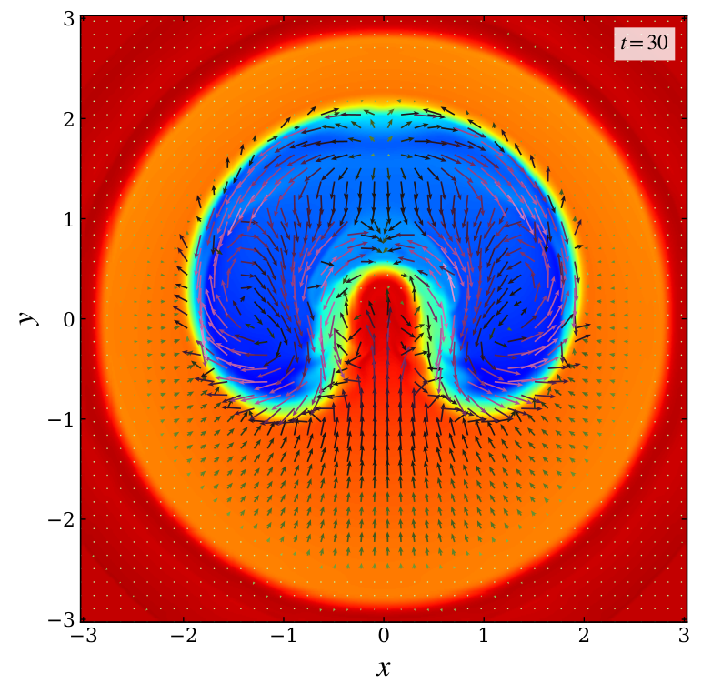
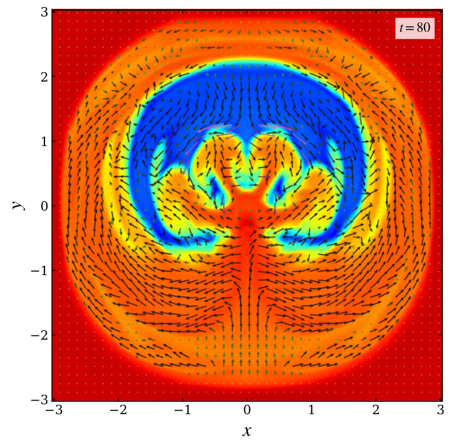
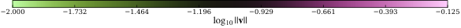
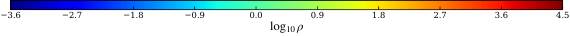
图注：M3模型在次级不稳定性发展前后的水平中面速度场，左为t=30，右为t=80，截面z=1.5。速度箭头的长度和颜色均按速度大小的十进对数缩放；底图以对数色标显示静止质量密度。时间和长度采用模拟单位。
怎么看这张图：后期复杂横向运动提示界面混合增强，但图本身不识别粒子加速效率或辐射。模型无初始纵向差速，不能把这一静态圆柱实验当作完整真实喷流。 直接显示二次界面演化而不夸大天体辐射推论。
来源与置信度：arXiv HTML；source verified；https://arxiv.org/html/2611.18268v1/rho_v_xy_M3_t30.png；https://arxiv.org/html/2611.18268v1/rho_v_xy_M3_t80.png；https://arxiv.org/html/2611.18268v1/colorbar_v_2D.png；https://arxiv.org/html/2611.18268v1/colorbar_rho_v_2D.png
5. Resonant Trapping of Neutrinophilic Dark Matter in Supernovae
- 来源：arXiv / astro-ph.HE
- 链接：https://arxiv.org/abs/2611.17604
- 作者：Christopher V. Cappiello, P. S. Bhupal Dev, Amol V. Patwardhan
- 公告 / 来源日期：2026-11-16
- 阅读层级：相关简报
- 评分：novelty 8/10，importance 7/10，relevance 8/10，final 8.65/10
- 推荐理由：共振散射改变超新星冷却排除区，机制新但模型依赖且非直接中微子观测。
中文题目：中微子共振散射可削弱部分暗物质超新星冷却限制
问题、方法与结论：研究讨论暗物质、中微子与复标量媒介直接耦合的模型：中微子湮灭通过t道产生暗物质，而暗物质与反中微子的s道散射可在质心能量接近媒介质量时共振增强。作者采用20太阳质量前身星的一维超新星模拟在反弹后1秒的温度、密度与化学势剖面，计算产生率并乘未散射逃逸概率。媒介质量为暗物质质量三倍时，约5至100 MeV的媒介质量范围出现冷却排除缺口；这不是所有暗物质模型的普适结论。
意义与贡献：同样以SN1987A能损率限制新粒子，约束形状仍强烈依赖相互作用道。通常中等耦合最易把能量带走；本模型却可在这一区间共振俘获，使粒子产生并不等于额外冷却。本文给出具体反例，提醒不能仅按产生截面迁移旧排除区。
可借鉴之处：可借鉴的是把产生、径向输运和泡利阻塞联合处理，并用无俘获与有俘获的发射率剖面对照解释参数图。核心温度在约8 km附近达到峰值；改变媒介质量会改变哪些半径和粒子能量能够共振，因此排除区的非单调结构有明确的空间来源。
局限与关注点：计算只把未散射逃逸粒子计入能损，未追踪多次散射后残余携能及内部热输运，也未自洽更新超新星演化。5×10^52 erg/s是采用的冷却判据，非对SN1987A数据重新完成的全似然拟合；图中CMB限制还含从另一散射模型迁移的估计。后续应以输运计算检查缺口的稳健程度。
图3
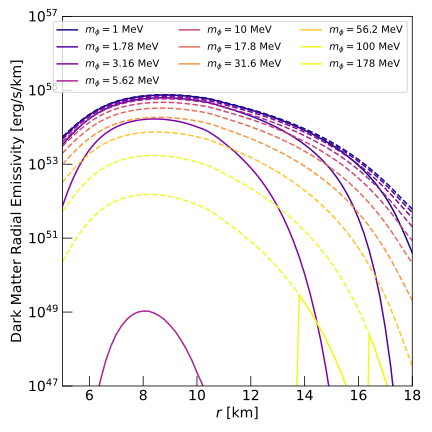
图注：不同媒介质量下的暗物质径向发射率剖面：虚线不计俘获，实线计入俘获；暗物质质量取媒介质量的三分之一，耦合常数g=10^-4。图中比较的是每秒、每单位径向距离逃出中微子球的能量，用于解释图1排除区在数MeV附近出现缺口的原因。
怎么看这张图：比较同一颜色虚实线之间的压低程度，再看压低发生的半径范围。媒介质量决定热粒子能否达到散射共振，因而可改变逃逸能量而非只改变产生量；实线采用未散射逃逸近似，不能据此断言所有散射粒子最终都不携能逃逸。 原文用于解释共振俘获造成冷却约束缺口，直接支持简报的物理机制。
来源与置信度：arXiv HTML；source verified；https://arxiv.org/html/2611.17604v1/scalarwithandwithouttrappingallmasses.svg
6. Searching for magnetic field changes in the central compact object 1E 1207.4-5209 in two decades of X-ray spectra
- 来源：arXiv / astro-ph.HE
- 链接：https://arxiv.org/abs/2611.17430
- 作者：Timothy Leon, Wynn C. G. Ho
- 公告 / 来源日期：2026-11-16
- 阅读层级：相关简报
- 评分：novelty 7/10，importance 7/10，relevance 8/10，final 8.35/10
- 推荐理由：20年吸收线稳定性及相位磁场分布是有用约束，但主要为既有CCO的增量谱分析。
中文题目：1E 1207.4−5209长期X射线吸收线未显示明确磁场变化
问题、方法与结论：作者重分析2001—2020年XMM-Newton pn观测，剔除一次过短曝光后将31次观测组成九个时段，并在七个时段进行自转相位分辨拟合。以双黑体及非对称经验吸收线描述约0.66和1.38 keV特征，线中心未显示稳健的长期漂移；相位变化较清楚，主线能量变化约50 eV、谐波约20 eV。若解释为电子回旋线且取固定引力红移，可对应可见热点中不同的局部场强。
意义与贡献：这一中心致密天体具有较弱自转推断偶极场，却有独特吸收结构；长期追踪谱线可检验自转突变前后的局部磁场是否重排。本结果约束的是特定谱模型下的线变化，不能直接证明整颗星的磁场恒定。
可借鉴之处：把长期变化与旋转相位变化分开，并并列检查线中心、非对称宽度和残差，有助于识别视角效应。由线宽映射热点场强范围约六百亿至一千一百亿高斯时，必须说明固定红移与回旋解释，并承认忽略本征或热展宽会放大推得的场强分布。
局限与关注点：全部数据共同拟合的约化卡方约3.3，不能据此宣称简单模型已充分描述所有谱形。2015年自转变化若对应约4.5%的场强变化，预期能移仍与误差相当，未被明确排除。0.9、1.8及2.1—2.2 keV候选残差受线混合和仪器边结构影响，尚非新吸收线发现。2026年射电结果与截至2020年的X射线数据也不同期。
图5
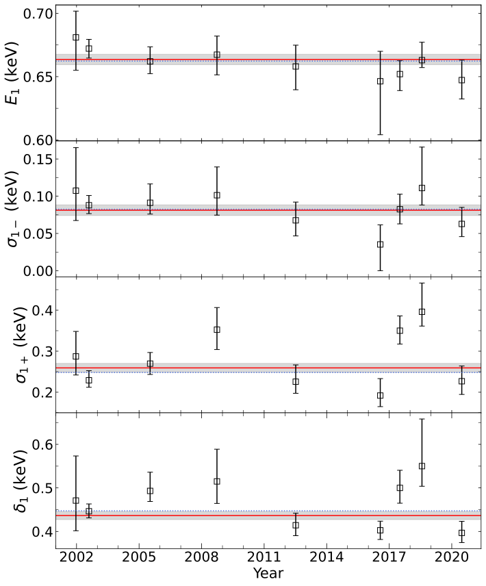
图注：九个时段第一条吸收线的谱模型参数随时间变化，依次为线中心能量、中心两侧宽度及深度。误差为1σ；水平实线是常数拟合，阴影为其1σ误差，点线是九时段合并能谱拟合结果。
怎么看这张图：线中心缺少稳健的长期漂移，但宽度、深度与经验模型耦合。常数线不意味着复杂谱形已被充分拟合，也未排除小到与误差相当的磁场变化。 支撑长期稳定性结论的实际观测参数。
来源与置信度：arXiv HTML；source verified；https://arxiv.org/html/2611.17430v1/averagefirstabsorption.svg
7. Periodic Modulation of Linear Polarization Fraction in Repeating FRB 20240114A
- 来源：arXiv / astro-ph.HE
- 链接：https://arxiv.org/abs/2611.17805
- 作者：Fang Sun, Yong-Feng Huang, Chen Du, Chen Deng, Pei Wang, Lun-Hua Shang, Chen-Ran Hu, Xiao-Fei Dong
- 公告 / 来源日期：2026-11-16
- 阅读层级：相关简报
- 评分：novelty 7/10，importance 7/10，relevance 8/10，final 8.35/10
- 推荐理由：120天线偏振调制约3.1sigma全局置换信号，488天约四周期；红噪声和采样稳健性不能由置换自动保证。
中文题目：FRB 20240114A的线偏振比例出现约120天调制候选
问题、方法与结论：作者重新分析FAST公开偏振目录，选出信噪比大于20的6099次暴，按观测日取均值形成95个等权数据点，覆盖487.66天。相位距离相关和广义Lomb–Scargle搜索10—240天周期，分别在119.91和122.31天出现最强峰；千万次固定观测日的随机置换给出全搜索假警率约0.001，对应单侧高斯等效显著性约3.1σ。固定119.91天的描述性正弦拟合半振幅为3.23个百分点。
意义与贡献：研究把周期搜索从暴发率或中心频率扩展到线偏振比例，检验发射几何或传播环境是否随长时间尺度变化。两种算法使用同一数据，属于方法交叉检查，不能相乘得到更高发现显著性。约四个周期的时间跨度也不足以证明长期稳定时钟。
可借鉴之处：按日等权可避免高暴发率日期支配结果；每次置换重扫全部9348个频率，计入周期搜索试验数。均值与中位数交叉检验有助于识别离群值影响，但中位数GLS仅约2.77σ。上述方法可用于其他不均匀采样观测，前提是明确零假设和日数据的误差、选择效应。
局限与关注点：置换假定每日值可交换，未检验时间相关噪声；文中周期上下范围是超过全局3σ阈值的区间，并非常规参数置信区间。进动、轨道传播和超慢自转均只是解释候选。18个宽带暴的退偏振限制若适用于所有相位，简单外屏不足以解释拟合振幅；不能据此排除所有传播模型。112.9天中心频率与143.4天活动周期也尚未统一。
图5
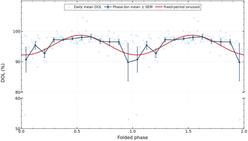
图注：FRB 20240114A每日平均线偏振比例按固定119.91天周期折叠。浅蓝圆点为95个日均值，深蓝点为12个等宽相位箱内的日均值平均，误差棒为均值标准误；红线是对未分箱日均值作的固定周期正弦拟合。为便于观看，数据、分箱与拟合重复展示第二个相位周期。
怎么看这张图：两遍相位图不是两个独立观测周期；图示约3.23个百分点半振幅，显著性必须来自全文重扫周期的置换检验，不能靠折叠外观判断。 展示偏振调制形态并避免视觉重复误读。
来源与置信度：arXiv HTML；source verified；https://arxiv.org/html/2611.17805v1/Fig04_DOL_phase_folded_sinusoidal_publication.svg
8. What constrains the neutron-star crust? Present data, future measurements, and EOS doppelgängers
- 来源：arXiv / astro-ph.HE
- 链接：https://arxiv.org/abs/2611.17920
- 作者：Vishal Parmar
- 公告 / 来源日期：2026-11-16
- 阅读层级：相关简报
- 评分：novelty 7/10，importance 8/10，relevance 7/10，final 8.35/10
- 推荐理由：统一EOS揭示壳性质与全局观测退化，未来精度预报依赖单一基准及核理论先验。
中文题目：整体观测相似的中子星可以具有明显不同的壳层
问题、方法与结论：作者以统一核物质状态方程及可压缩液滴壳层模型，联合核实验、手征有效场论、NICER与GW170817约束，再加入假设的精密未来观测。当前条件下，1.4倍太阳质量星的壳厚中位数约1.05公里、壳层转动惯量占比约3.55%；移除低密度核理论约束后，多项壳层区间宽度增至约2—3倍。进一步构造整体半径与潮汐响应相近、壳层质量和惯量占比却相差超过两倍的状态方程实例。
意义与贡献：整体观测主要约束积分性质，壳层还依赖低密度对称能与富中子核表面能。更精确的质量、半径和潮汐形变测量未必消除这类退化；本文把这个限制转成可检验的反例，而不是宣称任何未来观测都无用。
可借鉴之处：分别移除数据约束、改变表面能外推，并用两个不同壳层产生模拟数据后尝试恢复，是检查信息实际来自哪里的方法。选定未来方案的最大壳厚区间收窄因子约1.27，相当于缩窄约21%；应把这种条件预测与真实仪器灵敏度预测区分。
局限与关注点：计算限于平滑核子状态方程与球形液滴，未覆盖异相物质或核意面；核理论以硬接受区间输入，缺少完整相关误差模型。未来数据是单一参考状态方程的无噪声注入，并非多次噪声试验。所选极端配对的恢复分布高度重叠，不代表这种配对在自然界的发生率；裂壳、冷却或自转突变等更直接探针也需各自可靠机制模型。
图6
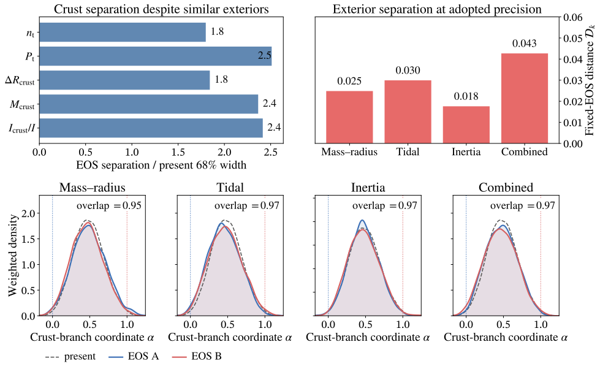
图注：壳层不同而整体观测相似的两条状态方程之构造与恢复。左上以当前完整数据68%区间宽度归一化两者差异，右上给出各假设测量精度下的距离。下方面板比较当前后验与两次匹配注入恢复，在壳层坐标alpha上将状态方程A、B分别置于0和1，蓝红点线标示其位置。
怎么看这张图：上方外观差异小而壳层差异大，下方两种恢复仍重叠，显示积分观测的退化。所选配对是特意寻找的反例，不能推成总体发生率或具体仪器发现显著性。 直接展示论文核心反例及恢复检验。
来源与置信度：arXiv HTML；source verified；https://arxiv.org/html/2611.17920v1/doppelganger_recovery.svg
9. Evidence for a Fast, Long-Period, Hot Population of Accreting Neutron Stars
- 来源：arXiv / astro-ph.HE
- 链接：https://arxiv.org/abs/2611.17972
- 作者：A. Patruno, M. A. Ferrer Martínez, B. Haskell, Y. Cavecchi
- 公告 / 来源日期：2026-11-16
- 阅读层级：相关简报
- 评分：novelty 7/10，importance 7/10，relevance 8/10，final 8.35/10
- 推荐理由：39颗吸积中子星自转分布与轨道/温度关联，非线性制动不唯一，小样本群体新约束。
中文题目：吸积中子星约566 Hz聚集与较长轨道周期有关，制动机制仍未确定
问题、方法与结论：作者将已测自转的吸积中子星样本扩至39个，比较五种经验分布，最优模型含宽的低频成分与中心565.7 Hz、宽32.4 Hz的高频聚集。29个可靠轨道周期系统按487.5 Hz工作边界分组，约85%的快慢配对中，快自转者轨道更长，名义单侧置换概率约0.00078。31个宁静温度约束中仅10个测量、21个上限；控制源类别后，快组较热的双侧概率为0.015，证据较弱。
意义与贡献：研究把自转分布与双星演化、吸积供能及冷却联系起来。高频聚集在两种混合模型下位置相近，但单个偏斜分布仍是可行替代，不能据此确认两个物理种群。旧540 Hz分类与新模型端点也不是同一种量。
可借鉴之处：区分总体频率宽度、单源短期游走及长期平衡频率差异，是本文有用的推理。采用偏宽松的转矩幅度和相关时间，十亿年随机扩散也仅约8 Hz，小于拟合快组宽度；因此普通短期转矩噪声难以单独解释总体分散。温度分析保留上限而非强行赋值，并检查分类边界敏感性。
局限与关注点：样本小且异质，自转和轨道测得的选择效应尚不能消除；温度上限又受距离、吸收及曝光影响。32.4 Hz宽度的模型内95%区间为7.4—50.3 Hz。磁层调节、吸积率与磁场相关、演化阶段及额外制动均可解释部分现象；文中制动演化是示范，并非连续引力波或r模的发现。
图1
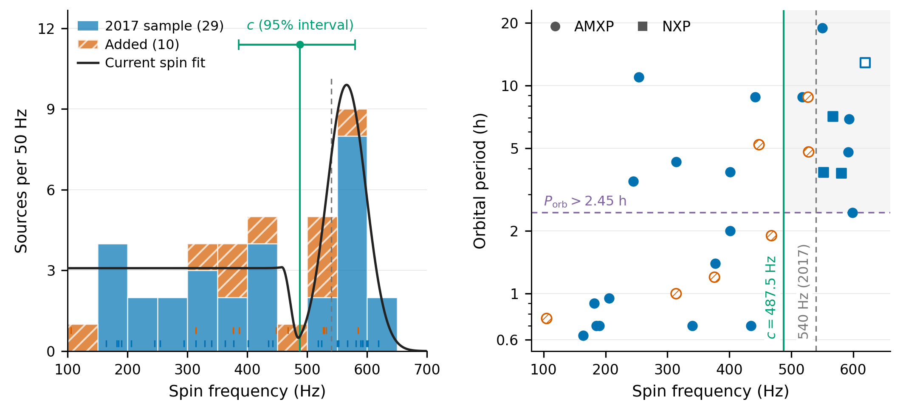
图注：吸积中子星自转与轨道样本。左：蓝色为原29源、橙色斜线为新增10源，短线标出单源自转，黑线为按每箱源数缩放的渐消均匀加高斯拟合；绿线及横条为新端点与95%自助区间，灰虚线为定义不同的旧540 Hz分类。右：轨道周期对自转频率，颜色沿用左图，圆和方形区分吸积供能与核燃烧振荡测得自转的系统；4U 1608−52仅作参考，未计入10快、19慢的比较。
怎么看这张图：高频聚集位置比快慢分界稳定；右图长轨道同时有快慢系统，长周期并非充分成因。直方图双成分也不自动证明两种物理通道。 同时展示更新样本及轨道关联。
来源与置信度：arXiv HTML；source verified；https://arxiv.org/html/2611.17972v1/spin_orbit_main.png
10. Constraining Accretion Regimes of Little Red Dots from Their Variability
- 来源：arXiv / astro-ph.HE
- 链接：https://arxiv.org/abs/2611.18153
- 作者：Indu K. Dihingia
- 公告 / 来源日期：2026-11-16
- 阅读层级：相关简报
- 评分：novelty 7/10，importance 7/10，relevance 8/10，final 8.35/10
- 推荐理由：超爱丁顿盘变率抑制框架解释LRD静默，但仍与冻结低吸积盘退化，属模型探索。
中文题目：小红点缺少变化可检验超爱丁顿吸积，但吸积率界限高度依赖模型
问题、方法与结论：作者建立盘区随机涨落的半解析模型，结合平流带走辐射、风光球空间平均与光子扩散滤波，解释小红点的低变化幅度。以普通类星体的变化归一化，再模拟18个源的监测，在基准质量分布、风模型和测光误差下，高吸积率分支给出无量纲质量供给率约大于60的95%模型内限制。该量按固定10%效率定义，不能等同于观测光度除爱丁顿光度。
意义与贡献：不变光源也携带时间尺度信息：短基线上的平静可能源自涨落被抑制，也可能因为黏滞时间远长于监测。本文明确保留低供给率的冻结薄盘退化，因此未由不变性唯一证明超爱丁顿吸积，更未证明小红点全是同一类黑洞系统。
可借鉴之处：把物理衰减、波段权重、有限基线与逐源检出概率分开，比直接把一个幅度阈值转成吸积率更可检验。不同质量分布使基准限值约在40—100之间，风球化半径假设还能使其降至约26—38；延长监测与多波段比较比单个限值更值得跟踪。
局限与关注点：各盘区独立、局部涨落振幅和风模型均是条件，基准类星体预测时间尺度比观测长约一个量级，幅度重标定不等于时间结构已被验证。附录采用均匀12历元模拟，应视为调查近似；扩散后协方差仍用指数族也需额外检验。外层包层再处理、残余恒定成分或不同源性质可再降低变化，故数值限制不是普适测量或模型无关下界。
图3
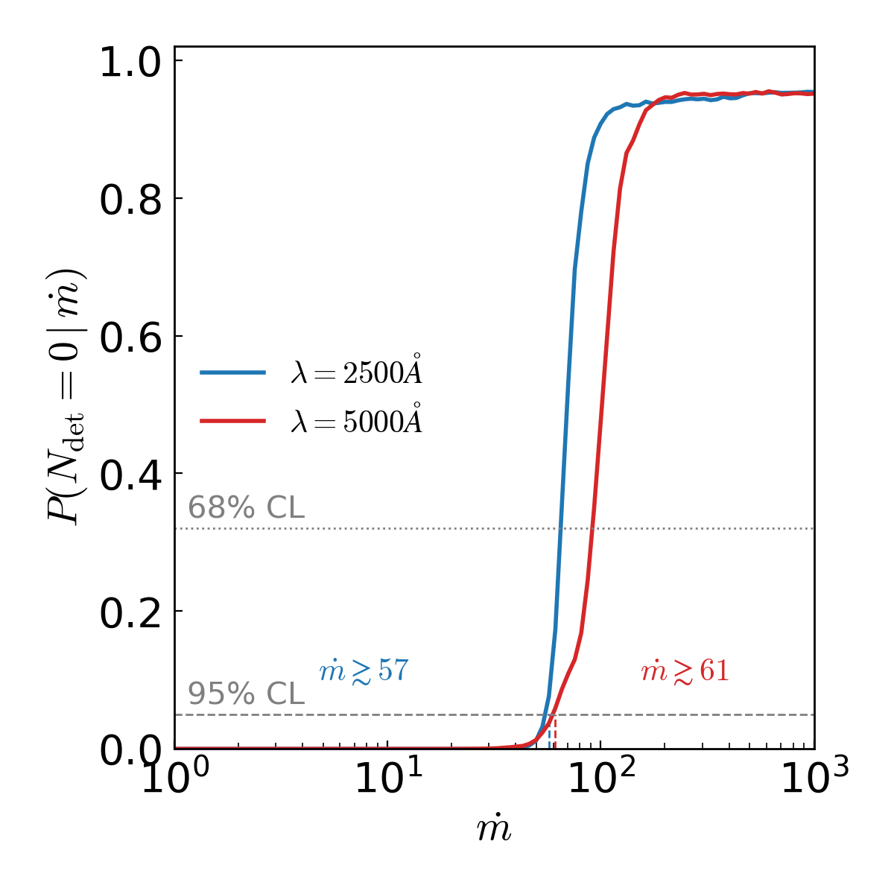
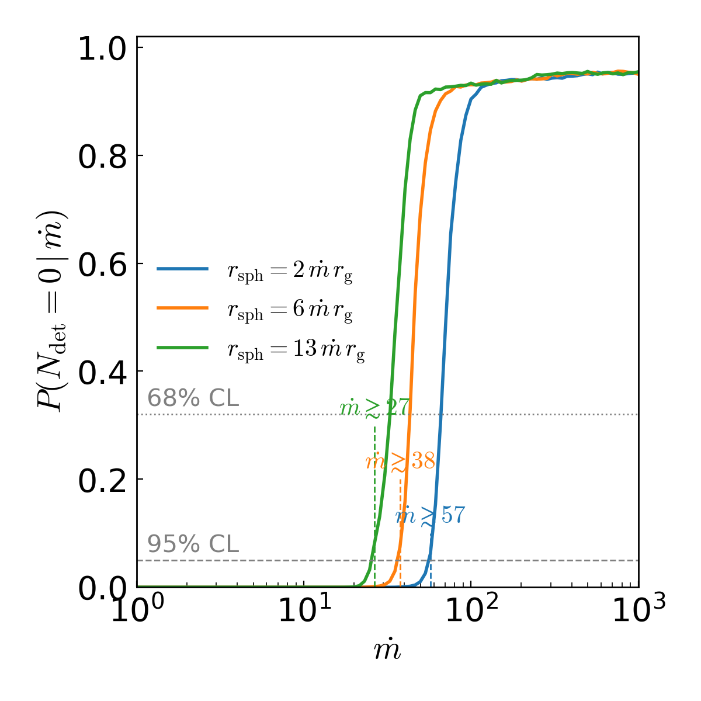
图注：左：蒙特卡洛前向模型中18个TWINKLE小红点均未检出变化的概率随无量纲质量供给率变化，比较静止系2500和5000埃。右：采用不同风球化半径后的同类比较。
怎么看这张图：曲线依赖假设的质量分布、均匀模拟采样和风结构；横向移动就是模型系统差异。高供给率端约0.95的平台来自每源名义假阳性，不是超爱丁顿解释的后验概率。 展示条件推断及主要风模型系统差异。
来源与置信度：arXiv HTML；source verified；https://arxiv.org/html/2611.18153v1/Fig-03.png；https://arxiv.org/html/2611.18153v1/Fig-A04.png
11. Polarization of strongly lensed gravitational waves as a probe of the lens-induced orientations of electromagnetic counterparts
- 来源：arXiv / astro-ph.HE
- 链接：https://arxiv.org/abs/2611.17637
- 作者：Kyungmin Kim
- 公告 / 来源日期：2026-11-16
- 阅读层级：相关简报
- 评分：novelty 8/10，importance 7/10，relevance 7/10，final 8.30/10
- 推荐理由：用引力波偏振作透镜像方向参照，未来探测器模拟有价值；电磁对齐及选择假设尚待核。
中文题目：透镜引力波偏振可为电磁喷流方向提供参考，实际观测受视角限制
问题、方法与结论：研究提出用双中子星引力波偏振角作为源固有方向参考，和强透镜后电磁喷流的表观轴比较，约束像位置处的局部剪切。模拟四万个透镜候选，筛出5908个至少双像达到ET与CE联合信噪比要求的系统；在理想轴向测量且喷流与轨道对齐时，约33%的系统至少一像达到文中单像3σ标准，轴向误差10度时降至约25%。这些是条件模拟比例，并非年度发现率。
意义与贡献：电磁多像通常只能比较彼此方向，难知源本来的轴。静态透镜近似不旋转引力波偏振，却以雅可比改变喷流形态，二者提供不同信息。偏振角仍有90度简并，需借助透镜模型和轴向映射选择模式，不是完全脱离模型的绝对罗盘。
可借鉴之处：把位置、时延及方向一起纳入联合分析，并检验检出选择后的区间覆盖，是有用的方法。方向偏移对质量片变换不变，因此能检验局部剪切，却不能单独打破质量片与宇宙学距离的退化。共有偏振误差也不能按像数独立平均掉。
局限与关注点：有信息的偏振主要出现在大于约40度的视角，恰与容易看见明亮喷流的小视角冲突。高红移喷流极暗且难分辨，文中比例未包含获得可解析电磁轴的现实效率。分析用固定状态方程、四极主导无自旋波形和Fisher近似，并假定简并模式已选对；微透镜、非高斯误差和喷流失配仍需处理。多像搜索的事件级误报率也高于单像名义值。
图2
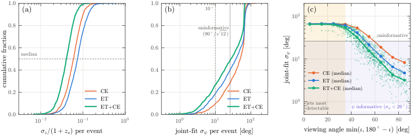
图注：ET、CE及联合网络的模拟测量精度。(a) 潮汐项给出的每事件红移1σ误差除以一加红移的累积分布，虚线为中位数。(b) 联合拟合偏振角1σ误差的累积分布，标出10度及模90度下约26度的无信息尺度。(c) 偏振角误差对视角，点为联合网络，曲线为各网络滑动中位数；紫区为有信息的偏振，黄带为最易探测喷流的视角。
怎么看这张图：关键是紫区与黄带没有交叠：引力波偏振容易测清时，电磁喷流往往更难观测。因此理想几何可测比例不能直接换成年发现数。 突出核心方法的现实观测瓶颈。
来源与置信度：arXiv HTML；source verified；https://arxiv.org/html/2611.17637v1/fig2_gw.png
12. Probing the Activity History of Repeating Fast Radio Bursts with Cluster Lensing
- 来源：arXiv / astro-ph.HE
- 链接：https://arxiv.org/abs/2611.17833
- 作者：Huan Zhou, Kai Liao, Zhengxiang Li, Cheng-Gang Shao
- 公告 / 来源日期：2026-11-16
- 阅读层级：相关简报
- 评分：novelty 8/10，importance 7/10，relevance 7/10，final 8.30/10
- 推荐理由：星系团透镜跨源历元约束FRB活动寿命的新设计，依赖未来事件与有限透镜目录。
中文题目：星系团透镜可在短期监测中访问重复FRB相隔数十年的发射历史
问题、方法与结论：作者用MACS J0717.5+3745的201份透镜质量图，模拟重复快速射电暴的多像时延、有限活动期与每日十分钟的五年监测。不同像路径可把相隔多年的发射带到同一观测窗口；扣除已知有符号透镜时延，再除以一加红移，可恢复不同暴的源参考系间隔。示例红移2、最大像间时延42.01年时，五年监测的几何历史覆盖上限约15.67源年，实际检出通常更少。
意义与贡献：关键在区分不同原始暴与同一次暴的多个回声。前者能给出发射历史跨度的下界，后者只测同一次发射的路径延迟，不能证明引擎活了这么久。即便两次暴相隔很远，也无法区分连续活动与中间休眠后重启。
可借鉴之处：模拟让同一次暴的所有像共享本征亮度，按观测窗口和放大率决定检出，并以参考像先被发现为样本条件，避免把多像重复计为更多独立暴。跨像色散量、法拉第旋转量及持续射电源还可比较不同历史时期，但需用同暴回声约束路径传播差异。
局限与关注点：这是单个星系团、恒定泊松暴发率及单段活动假设下的预测，不是已找到透镜FRB或测得寿命。透镜时延、源关联、通量选择与传播屏稳定性均需验证；极长活动期会因有限时延范围而不可区分。正文与图注的模型比较方向标注存在不一致，本简报不据其无穷证据区域或预期贝叶斯因子数值作发现式判断。
图1
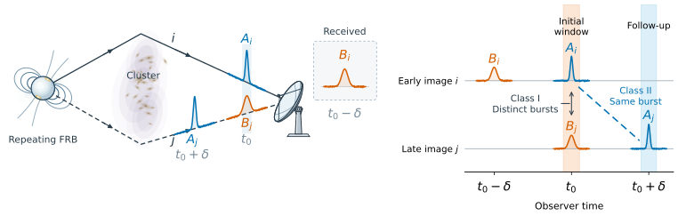
图注：星系团透镜重复FRB示意。左：重复源经星系团的两条代表性路径到达射电望远镜，B_i在t0−delta到达，A_i与B_j在t0重合，A_j预期在t0+delta到达。右：竖直的A_i—B_j连接是不同时刻原始暴同时到达的第一类特殊情况，蓝色A_i—A_j连接为同一次暴的第二类回声。
怎么看这张图：只有不同原始暴在扣除透镜时延后仍有发射间隔，才提供历史跨度下界；同一次暴的回声即使隔多年到达，也不测量引擎活动寿命。 澄清整篇论文最关键的两种事件关联。
来源与置信度：arXiv HTML；source verified；https://arxiv.org/html/2611.17833v1/fig_lensed_repeater_schematic.svg
说明
评分由 LLM 给出初评，再由本地阈值策略过滤；IACT、TeV 伽马射线和高能中微子天文学按重点方向处理。